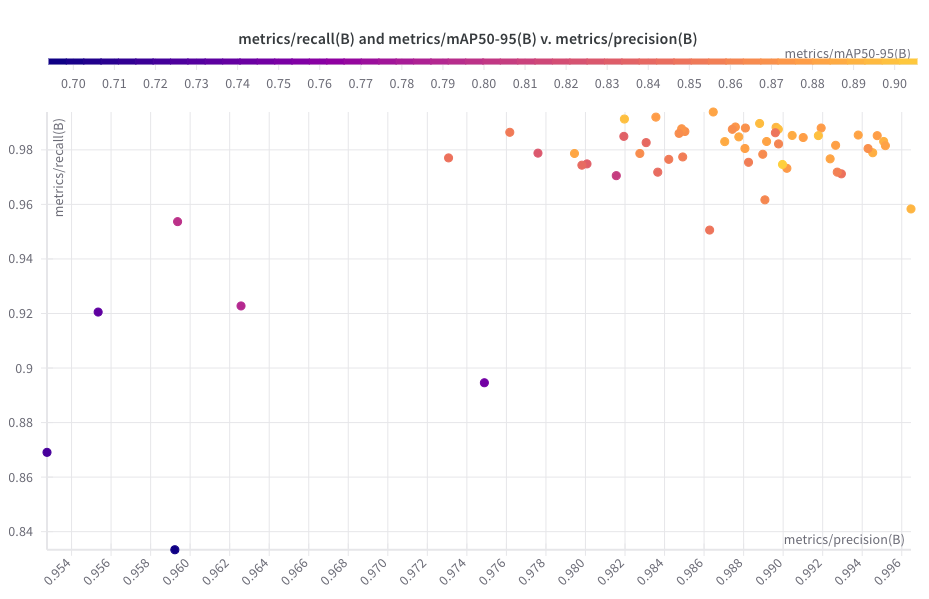

The Panda robot is designed to perform tree-climbing tasks, which require accurate perception of its environment. In order to climb, the robot must first detect and localize a suitable tree trunk, estimate its own relative position, and then move toward the target before initiating climbing.
The Panda Perception module provides this capability by integrating vision-based detection, depth sensing, and pose estimation. It ensures that the robot can identify a tree trunk as a stable target, determine its own location relative to it, and guide its motion toward the trunk as the first step toward autonomous climbing.
⚡ Challenge
Tree Trunk Detection: The system must reliably detect tree trunks in outdoor environments with varying light and background conditions.
Relative Visual Localization: The robot needs to estimate its relative position and orientation with respect to the tree trunk for precise navigation.
Stable Reference Target: The trunk must be treated as a fixed target in the environment, ensuring the robot can use it as a consistent climbing anchor.
Onboard Deployment: The entire perception pipeline must run in real time on the NVIDIA Jetson Orin Nano, a resource-constrained edge device.
🚀 Action
🧩 Trunk Detection & Training
To enable reliable tree trunk perception, I adopted a YOLOv8 segmentation model as the core detector. To overcome the inefficiency of manual annotation, I implemented an auto-labeling pipeline that integrates SAM (Segment Anything Model) with LKT Tracker, ensuring accurate and consistent sequence labeling across frames. The model was trained with extensive data augmentation and optimized through Weights & Biases hyperparameter sweeps, which enhanced robustness in outdoor tree environments. For deployment, I converted the trained model into ONNX format and accelerated inference using onnxruntime-gpu, achieving low-latency, real-time performance on the Jetson Orin Nano, even under resource constraints.

YOLOv8 training metrics: precision vs recall and mAP
Auto-Labeling System Demo (LKT Tracker + SAM)
🧭 Localization & Mapping
For localization, I initially experimented with ICP-based visual odometry, aligning consecutive frames to estimate camera pose and mapping tree trunk positions onto a global map. While effective in controlled cases, this approach became unreliable when the trunk was out of view for extended periods or when large obstacles blocked the line of sight. To address this limitation, I transitioned to a VSLAM framework, which leverages feature-based tracking to maintain odometry and deliver more robust localization, even when the trunk is temporarily occluded.
Initially, I used ICP for frame-to-frame alignment. As shown in the right video, this method can roughly indicate the relative position between the tree and the camera, but the trunk’s position is not stable. This demonstrates that the ICP-based approach is not robust in practice.
Here, I replaced visual odometry with VSLAM. Unlike ICP-based alignment, VSLAM leverages spatial feature points to estimate the robot’s current pose more robustly. The left video shows the camera pose output from the VSLAM module, while the right video demonstrates a path movement test.
🎯 Result
We successfully deployed the Panda Perception pipeline on the NVIDIA Jetson Orin Nano, achieving real-time performance with high detection accuracy and stable localization. The YOLOv8 model, accelerated through ONNX and onnxruntime-gpu, runs with low latency, while the integration of VSLAM ensures robust odometry even when the tree trunk is temporarily out of view. This demonstrates that the system can reliably detect tree trunks, estimate relative poses, and provide consistent localization in outdoor scenarios under limited computational resources.From the overall performance, we can observe that the system runs smoothly and the trunk detection is highly robust. The tree trunk consistently remains in the same position on the map, which provides a reliable reference for localization.
Panda Perception deployment demo on Jetson Orin Nano
As the next step, the perception system will be integrated onto the Panda robot platform, where it will be tested in real-world tree-climbing tasks to validate its effectiveness in guiding the robot toward a target trunk and supporting autonomous climbing behavior.